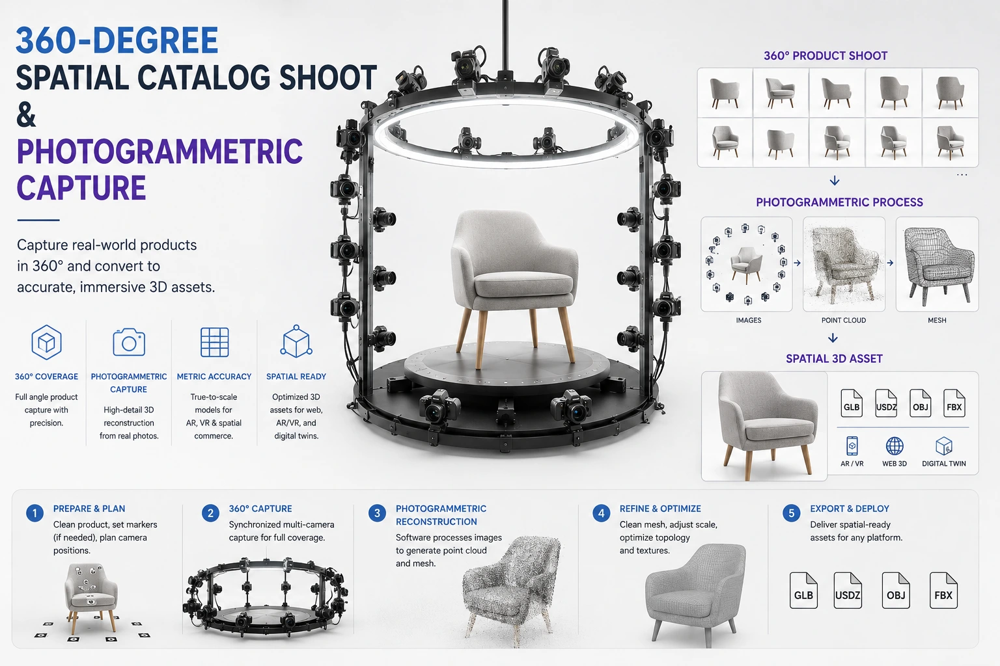
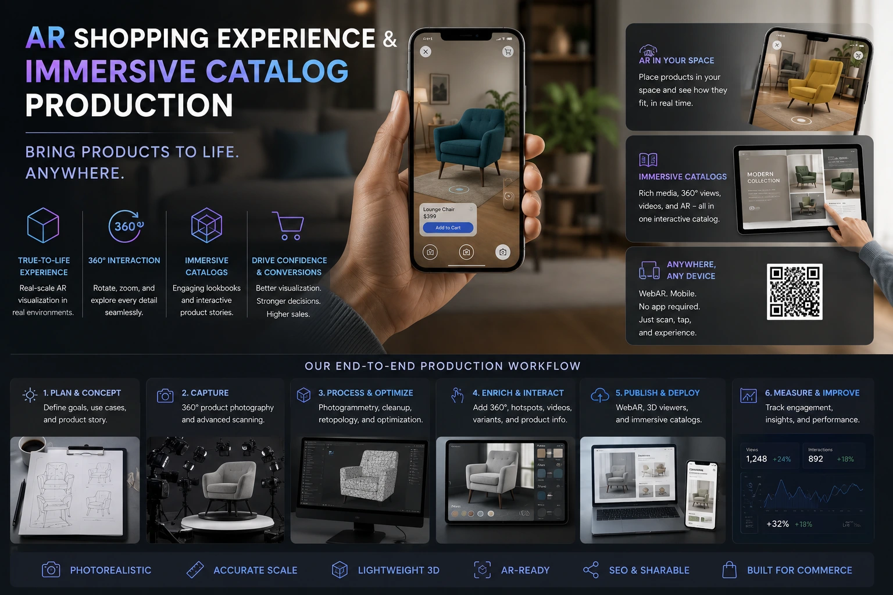

How to Shoot 3D and AR-Ready Product Assets for Spatial Commerce
The Next Frontier in E-commerce Visual Production
Every generation of e-commerce visual production has been defined by the technology that bridged the gap between what a buyer can experience online and what they would experience in a physical store. The first generation was the product photograph — replacing the printed catalogue with a digital image. The second was 360-degree spin photography — giving buyers the ability to rotate and examine a product from multiple angles. The third generation is spatial commerce: the ability to place a digital product into the buyer's real physical environment through augmented reality for online shopping, or to explore a product in a fully immersive virtual environment through spatial display platforms.
The brands that are winning on Amazon, Shopify, and their own D2C platforms in 2026 and beyond will be the ones whose product catalogs include not just standard images and 360-degree spin sets but 3D product modeling assets and AR-ready product photography — the visual formats that close the physical examination gap more completely than any previous display technology.
This guide covers the production methodology for AR-ready product photography, the 360-degree spatial catalog shoot approach that produces both standard spin assets and 3D model source data, the specific technical requirements for different spatial commerce deployment contexts, and what Indian brands need to understand about immersive catalog production before they brief a production team.
What Spatial Commerce Actually Means for Indian E-commerce Brands
Spatial commerce is the term for e-commerce experiences that integrate three-dimensional and spatial product display — allowing products to be viewed in 3D interactive viewers, placed in real environments through augmented reality for online shopping, or experienced in virtual showrooms and metaverse environments. It is not a distant concept — it is already deployed at scale by Amazon (AR View), Ikea (Ikea Place app), Shopify (3D and AR product models), and Myntra (virtual try-on for apparel and jewellery).
For Indian e-commerce brands — particularly those in furniture, home goods, fashion accessories, footwear, and jewellery — spatial commerce addresses the single most significant purchase barrier in their specific category: the inability to know how the product will look in the buyer's specific physical context before purchasing. The Indian consumer who cannot visualise how a particular sofa will look in their living room or how a specific pair of earrings will look at their scale is a consumer who frequently either defers the purchase entirely or returns the product after purchase.
3D product modeling assets and AR-ready product photography address this hesitation at its root — by enabling the buyer to resolve their visualisation uncertainty before the purchase rather than after it.
Reduced Purchase Hesitation
AR product placement allows buyers to resolve the "will this look right in my space?" question before purchasing — eliminating the specific hesitation that prevents conversion for furniture, home décor, and large-format product categories.
Dramatically Lower Return Rates
Buyers who have placed an AR product in their space before purchasing arrive with accurate scale and visual expectations. The scale and colour mismatch returns that dominate furniture and home goods categories are significantly reduced when AR has enabled pre-purchase verification.
Competitive Differentiation
In Indian product categories where most competitors are still using standard 2D photography, a brand offering AR try-on or 3D product viewing communicates a level of technological investment and customer experience commitment that differentiates it immediately and decisively.
Higher Average Order Value
Buyers who use AR product placement tools demonstrate higher purchase confidence, longer session times, and higher average order values than those who use standard product images alone — across multiple product categories in documented platform studies.

The 360-Degree Spatial Catalog Shoot: Production Methodology
The 360-degree spatial catalog shoot is the capture methodology that produces both the standard spin viewer assets and the source data for 3D model reconstruction — the most efficient production approach for brands that need to serve both traditional e-commerce platforms and spatial commerce deployments from the same production investment.
The two primary capture methodologies for the 360-degree spatial catalog shoot:
- Photogrammetric image capture. The product is placed on a motorised turntable in a controlled studio lighting environment. A camera captures images at consistent intervals as the turntable rotates — typically 36 to 72 images per horizontal rotation. The camera is then repositioned to capture additional rows at different vertical angles — typically three to five rows from below-horizontal through horizontal to above the product — producing a spherical image set of 108 to 360 images. These images are processed by photogrammetric software (RealityCapture, Metashape, or equivalent) to compute a 3D mesh and texture maps from the overlapping image data.
- Structured light or LiDAR scanning. A structured light scanner or LiDAR sensor projects a pattern onto the product surface and uses the deformation of the pattern to compute the product's three-dimensional geometry directly — without requiring image overlap computation. Structured light scanning produces higher geometric accuracy than photogrammetry for products with complex surface geometry but lower photorealistic texture quality — the photogrammetric approach produces better texture fidelity. For most Indian e-commerce product categories, photogrammetric capture is the more practical and commercially accessible approach.
The specific technical requirements for a photogrammetric 360-degree spatial catalog shoot:
- Consistent, diffused studio lighting with no specular variation. Photogrammetric software reconstructs 3D geometry from the visual differences between overlapping images — and specular highlights (hot spots on reflective surfaces that move as the camera angle changes) create false geometric information that corrupts the 3D reconstruction. A studio lighting setup using large, heavily diffused light sources — ideally a spherical or dome diffusion system — eliminates specular variation and produces clean, consistent diffuse illumination across all image captures.
- Background that contrasts clearly with the product. Photogrammetric software requires clear separation between the product and the background to accurately mask the product from the background in each image. A medium grey background — not pure white, which can clip highlight detail at the product edge — provides reliable contrast for automated masking while avoiding the light pollution that pure white backgrounds introduce into the product's shadow areas.
- Camera resolution of at minimum 24 megapixels per image. The texture quality of the final 3D model is determined by the resolution of the source photography — specifically the number of pixels per millimetre of product surface represented in the average image. For most product categories, a 24 to 45 megapixel camera produces sufficient texture resolution for AR deployment at the display scales used by current consumer AR platforms.
- Consistent focus across the full product surface. Photogrammetric reconstruction requires every visible surface of the product to be in sharp focus in at least three images. For products with significant depth — a chair, a pair of shoes, a complex decorative object — this may require focus stacking at each capture position, or the use of a tilt-shift lens that extends the depth of field across the product's full depth range.
- Scale reference included in at least one image series. The 3D model produced by photogrammetric processing has no inherent physical scale — it must be calibrated to real-world dimensions either through scale bar references included in the image capture or through manual dimensional scaling in post-processing against known product measurements. Include a calibrated scale bar in the first image series to enable accurate dimensional scaling in the 3D model output.
3D Product Modeling Assets: The Deliverable Formats for Spatial Commerce
3D product modeling assets for spatial commerce are delivered in specific file formats that are compatible with the deployment platforms — Shopify, Amazon, web-based AR viewers, and native mobile AR frameworks. Understanding the required output formats before commissioning the capture ensures that the 3D models produced are immediately deployable without additional format conversion work.
The primary deliverable formats for 3D product modeling assets:
USDZ (Apple AR / Shopify iOS)
- Primary format for iOS AR Quick Look and Safari AR on Apple devices
- Supported natively on Shopify for iOS AR product viewing
- Maximum file size: 15MB for acceptable AR loading on mobile
- Includes geometry, texture maps, and physical material properties
GLB / glTF (Android AR / Web 3D)
- Primary format for Android AR Core, web-based 3D viewers, and Shopify Android AR
- Supported by the model-viewer web component for embedded 3D product display
- Maximum file size: 15MB for web deployment; 5MB recommended for mobile AR
- Binary GLB is preferred over separate glTF + asset files for simpler deployment
FBX / OBJ (Platform Pipeline Input)
- High-fidelity master format for pipeline input — not used for direct consumer deployment
- Used for importing into 3D content creation tools for refinement
- OBJ with accompanying MTL and texture files for maximum compatibility
- Retain as archive masters alongside the consumer deployment formats
Interactive E-commerce Product Views: Deploying 3D Assets on Shopify
Interactive e-commerce product views through 3D and AR are supported natively on Shopify through the platform's 3D model media type — which accepts GLB files for 3D interactive viewing in the product gallery and USDZ files for iOS AR Quick Look. Deploying 3D product modeling assets on Shopify requires:
- Upload the GLB file as a 3D model media type in the product editor. Shopify displays a 3D interactive viewer — allowing buyers to rotate and zoom the 3D model in the product gallery — automatically when a GLB file is uploaded as a product media item.
- Upload the USDZ file as a linked AR file. Shopify uses the USDZ file to enable the "View in your space" AR button on iOS Safari — the button that launches the product in AR Quick Look, allowing the buyer to place the product in their real environment using their iPhone or iPad camera.
- Confirm file sizes are within Shopify's 3D model limits. Shopify supports 3D model files up to 250MB in the media library, but recommends keeping GLB files under 15MB and USDZ files under 15MB for acceptable rendering performance on consumer devices.
- Test the 3D viewer and AR experience on multiple devices before publishing. 3D model rendering and AR performance vary significantly between device generations and operating system versions. Test on at minimum one high-end and one mid-range iOS and Android device before publishing the 3D models to the public product pages.

Next-Gen Product Display: Advanced Tech Product Shoots for Specific Categories
Advanced tech product shoots for spatial commerce require category-specific production adaptations — because the photogrammetric capture process that works well for opaque, geometrically stable products faces specific challenges with certain material types and product characteristics that Indian e-commerce brands commonly sell.
The specific challenges and solutions for advanced tech product shoots by product category:
- Textiles and garments. The primary challenge is that fabric deforms under gravity and handling — a garment photographed lying flat, hanging, or worn on a mannequin produces a different shape in each configuration, and photogrammetric capture can only reconstruct the specific configuration in which it was captured. The solution for immersive catalog production of garments is to capture the garment on a rigid padded form that holds the fabric in its most representative worn shape, supplemented by a physically based cloth simulation model for AR try-on experiences where garment drape and fit must be visualised on the buyer's specific body.
- Jewellery and highly reflective materials. Metallic surfaces, gemstones, and highly polished finishes create specular highlight variation that corrupts photogrammetric reconstruction. The solution is to apply a temporary matte coating spray (specifically designed for photogrammetric scanning) to the product surface before capture, which eliminates specular variation and allows clean geometric reconstruction — then apply the product's actual photographic texture maps in post-processing to restore the authentic surface appearance in the final 3D model.
- Transparent products. Glass, clear plastics, and transparent packaging are essentially invisible to photogrammetric processing because they transmit rather than reflect the capture lighting — producing no usable geometric information. The solution is to apply a temporary matte spray coating or to use a structured light scanner that projects active illumination, supplemented by CAD model reference for products where the manufacturer's technical drawings are available.
- Large furniture and home goods. Products too large for a turntable require either a stationary product with a camera rig that moves around it, a handheld photogrammetric capture using a calibrated camera and capture software, or LiDAR scanning on a mobile device (iPhone Pro or iPad Pro with LiDAR sensor). For Indian furniture brands, the Apple LiDAR workflow — capturing with the native iPhone or iPad and processing through apps like Polycam or Scaniverse — is the most accessible entry point for large product 3D asset creation without specialist equipment.
The Future of Fashion Photography and Spatial Commerce in India
The future of fashion photography in India is a convergence of traditional photographic excellence and spatial capture technology — not a replacement of one by the other. The editorial photograph, the model portrait, the lifestyle image — these retain their unique emotional and aspirational communication function that no 3D model or AR experience replicates. The spatial layer is additive: it resolves the specific functional questions (will this fit? how big is it? how does it look in my context?) that the editorial layer is not designed to answer.
The most commercially advanced Indian fashion and lifestyle brands in 2026 are developing integrated visual asset strategies that include both traditional fashion photography for emotional and aspirational communication and spatial assets for functional purchase confidence. This two-layer strategy — editorial for desire, spatial for confidence — addresses the full spectrum of the buyer's visual information needs and produces the highest conversion and lowest return outcomes of any single-layer approach.
For Indian brands whose traditional photography workflows are already well-established, the entry point for spatial commerce is to begin adding 360-degree spatial catalog shoots to existing production sessions — starting with the top ten highest-revenue products in categories where AR placement or 3D viewing is most relevant — and building the spatial asset library progressively rather than attempting a full catalogue conversion in a single production cycle.
Immersive Catalog Production: Planning Your First Spatial Commerce Shoot
For Indian brands commissioning their first immersive catalog production session, the planning framework:
- Select five to ten priority SKUs for the first spatial shoot. Choose the products in categories where AR placement or 3D viewing is most commercially relevant — furniture, home goods, jewellery, footwear — and where the return rate is currently highest due to scale or fit uncertainty.
- Brief the production team on the target deployment platforms. Shopify AR, Amazon AR View, and custom web 3D viewers each have specific technical requirements for the 3D model output. The production team must know which platforms the assets will be deployed on before the shoot to ensure the correct capture density, output format, and polygon count are specified.
- Plan the capture alongside the standard catalog shoot. The most efficient production approach integrates the spatial capture into the same session as the standard product photography — shooting the standard white background hero images first, then repositioning for the spatial capture sequence. The lighting setup for spatial capture is different from standard product lighting (more diffused, dome-lit), so allocate separate setup time for the spatial capture segment.
- Budget for 3D model post-processing separately from photography. The photogrammetric processing and 3D model optimisation — mesh cleaning, texture baking, polygon reduction for real-time deployment, format conversion — requires dedicated post-production time that is separate from standard image retouching. Budget two to four hours of post-processing time per SKU for photogrammetric processing and 3D model delivery.
- Test the AR experience before publishing. Test every 3D model on the target deployment platform before making it publicly visible on the product page. Verify that the model's scale is accurate (a common post-processing error that makes products appear at the wrong size in AR), that the texture quality is acceptable on consumer device screens, and that the AR placement behaves correctly on both iOS and Android.
Conclusion
AR-ready product photography, 360-degree spatial catalog shoots, and 3D product modeling assets are the next-gen product display formats that are progressively becoming table stakes for Indian e-commerce brands in the categories where purchase hesitation and return rates are driven by scale, fit, and placement uncertainty. The brands investing in immersive catalog production now are building the spatial asset libraries that will be the competitive standard within three to five years — and they are doing so while the investment required is still lower and the competitive advantage still higher than it will be once the technology is universally adopted.
The entry point is smaller than most brands assume: a focused advanced tech product shoot for ten priority SKUs, integrated into an existing catalog photography session, produces the spatial assets that enable AR deployment on Shopify and Amazon with the same production team, in the same session, at an incremental cost above the standard catalog shoot.
At The PhD Ads, we produce AR-ready product photography, 360-degree spatial catalog shoots, and 3D product modeling assets for Indian e-commerce brands — photogrammetric capture, mesh processing, USDZ and GLB format delivery, and Shopify 3D deployment support, built for brands ready to bring their product catalog into the spatial commerce era.
Key Topics
Ready to Build Your Spatial Commerce Asset Library?
At The PhD Ads, we produce AR-ready product photography, 360-degree spatial catalog shoots, and 3D product modeling assets for Indian e-commerce brands — photogrammetric capture, USDZ and GLB delivery, and Shopify AR deployment support, built for brands entering the spatial commerce era.
Email: team@e2o.in